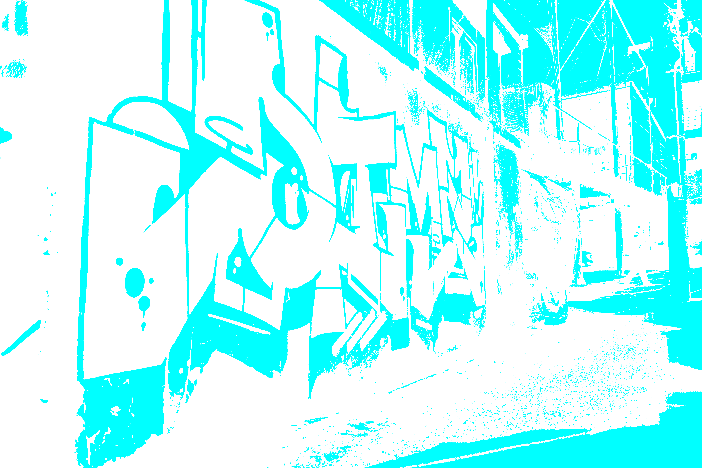
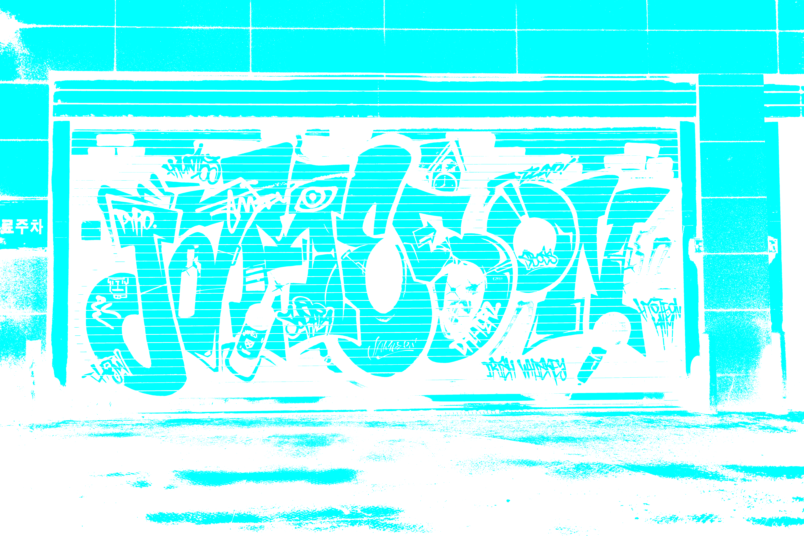
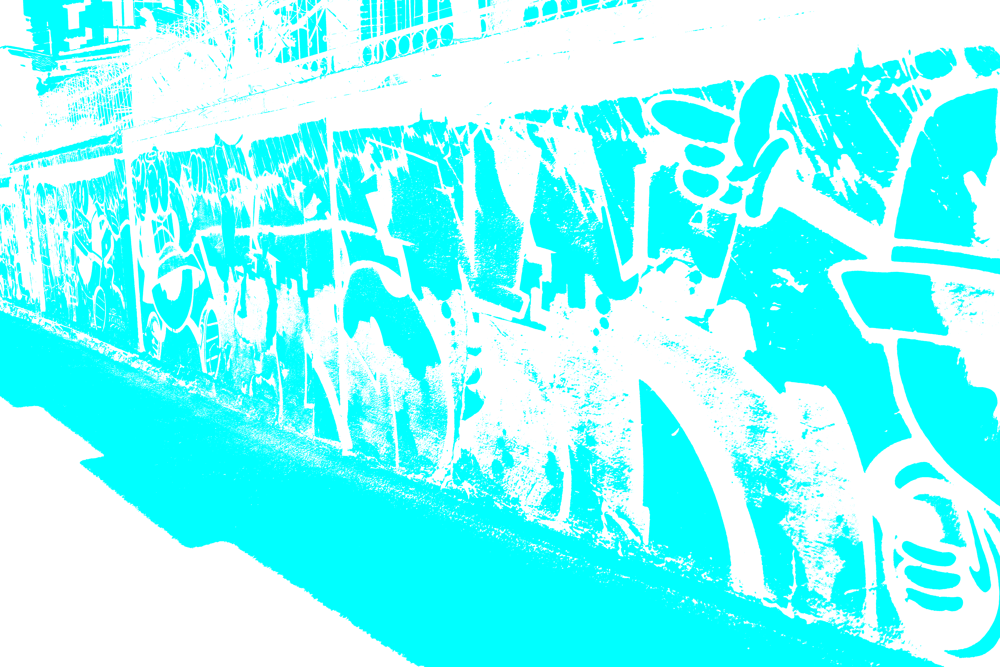
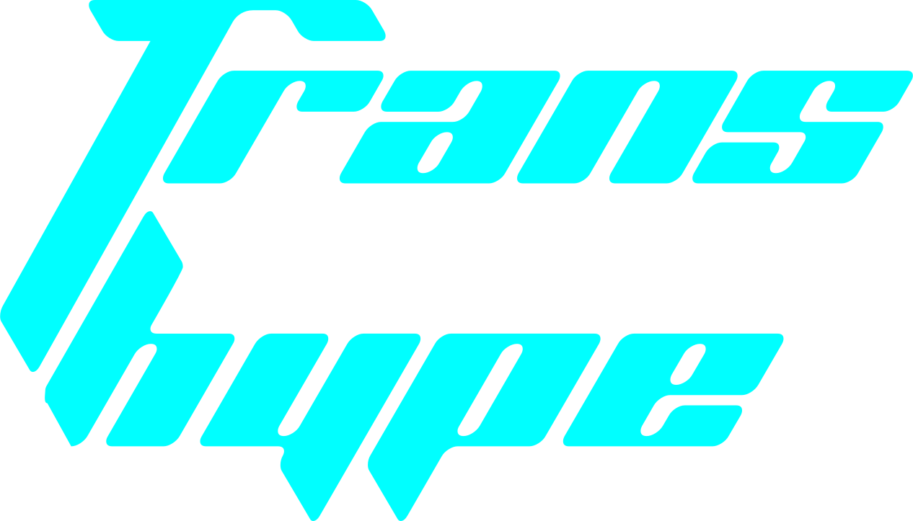
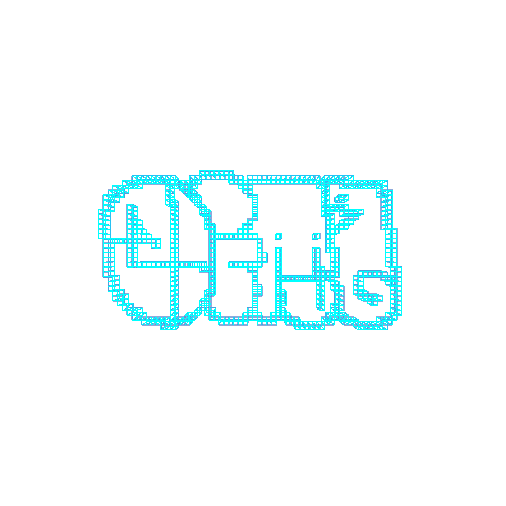
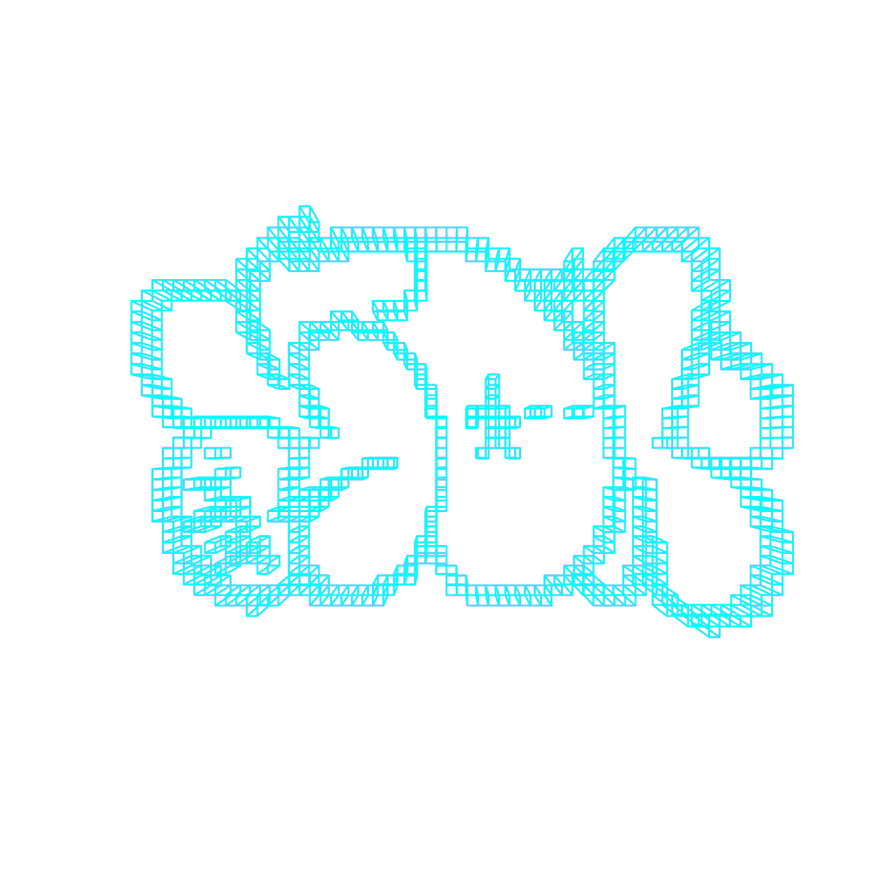
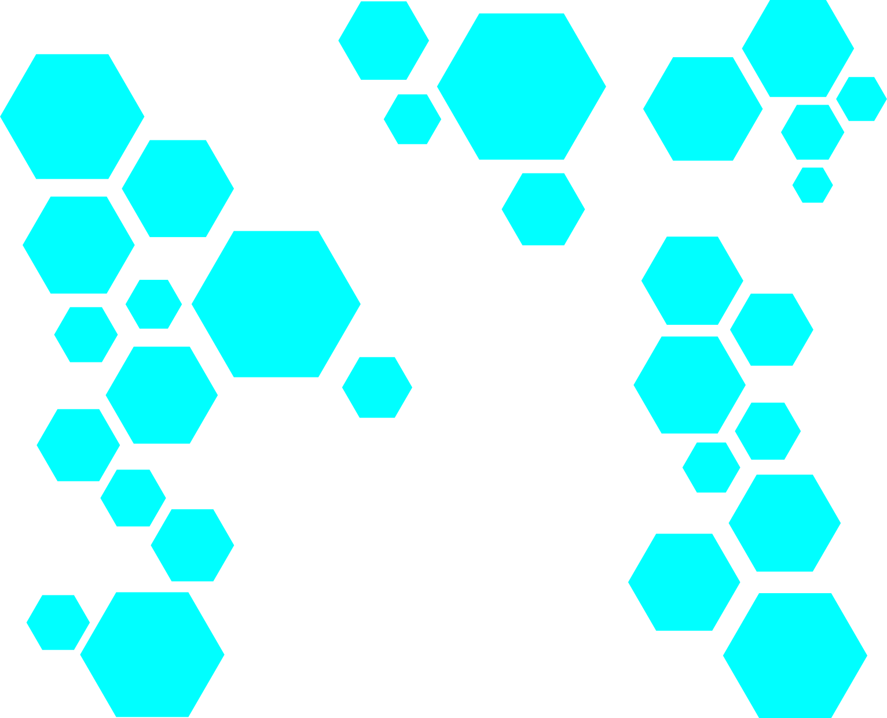

배경

도시를 걷다보면 건물 외벽, 골목들, 바닥에서 다양한 낙서들을 발견할 수 있다. 서브컬쳐에서 현대의 도시 거리 예술로 자리잡을 때까지 그래피티에 대한 논란은 끊이지 않았다. 그래피티 라이터들이 본인들만의 메세지 혹은 비쥬얼을 남기는 방식은 대분은 합법적이지 않다. 1960년대부터 그래피티 도구로 스프레이 락카, 마커 등을 주로 사용했고 이 도구들의 특성이 타인의 재산을 훼손시킨다는 이유로 지금까지 범죄로 취급되었다.

지금까지 그래피티가 범죄로 규정됨에도 불구하고 라이터들은 처벌 위험을 감수하고 이 문화를 즐겨왔다. 그렇다면 어떤 요소들이 제한당했던 이 문화를 지금까지 이어져오게 했으며, 어떻게 전통적 재미 요소들을 해치지 않으며 현대적으로 소비할 수 있을까.

현대로 들어서면서 디지털 비쥬얼을 위한 다양한 도구들이 개발되었다. 이를 사용한 그래피티 라이팅를 이제 합법의 영역에서 활동할 수 있는 서브컬쳐로 나아갈 수 있는 해결방안을 이 곳 Trans_HYPE에서 제시한다.
프로젝트 이름
플랫폼 Trans_HYPE는 HYPE의 방식을 전환한다. HYPE의 사전적 의미는 '과대광고', '광고를 대대적으로 하다'의 의미이다. 그래피티 문화의 대중에게 노출된다는 성격이 광고와 같이 대중을 대상으로 시각물을 노출시키는 것과 같은 맥락을 한다. 또 다른 HYPE의 의미는 미국 슬랭으로 '무슨 수를 써서라도 사고 싶은, 혹은 구하고싶은 개쩌는 아이템'이라는 뜻을 갖고있다. 스트릿 패션의 명품을 HYPE하다라고도 해 통념적으로 알고 있는 거친 스트릿 문화에서 '개쩐다'를 표현하는 단어이다. 시각물 그래피티가 스트릿 문화의 종류로 자리잡고 있으며, 거래 대상으로써의 가치를 이 플랫폼에서 '사고 싶은 상품'으로 전환시킨다. Trans_HYPE는 이처럼 '개쩌는' 그래피티를 사고팔 수 있는 상업적 영역으로 끌어올리고 소비 방식을 현대적 방식을 차용해 기존의 'HYPE'의 논리를 바꾼다.

디지털 그래피티

이 곳 Trans_HYPE에서 제공하는 그래피티 문화의 현대적 소비 방식은 그래피티의 디지털화이다. 물론 그래피티 문화의 재미 요소는 라이터 개인에 따라 다르기도 하고 다양하지만, 여기서 그래피티의 제 1 재미 지점은 '공간 내의 자기 표현'으로 설정했다. 이는 대중들의 시선이 노출되는 곳에 자신의 그래픽이나 메세지를 남겨놓는 것이다. 이 지점을 디지털화의 방식을 사용해 웹사이트 안에 개인의 시각물들을 담아놓는다.

플랫폼의 운영의 시발점은 기존의 그래피티 디지털화이다. 홍대 인근의 그래피티 20여점을 3가지 스타일(벡터, 3D, 블럭)로 디지털화하여 플랫폼의 운영 방식, 디지털화 방식을 시범적으로 보여준다. 그 과정에서 기존의 그래피티가 갖고 있는 전통적 도구의 매력과는 다른 디지털 그래피티의 매력을 체험할 수 있다. 이후 플랫폼 서비스로 그래피티 라이터 뿐만 아니라 일반인들의 그래피티 도안을 받아 디지털 상품으로 바꾸어 제공해준다. Trans_HYPE의 이용자는 그래피티 거래를 통해 수익을 낼 수 있는 기회를 얻을 수 있다.
공간(DimensionXYZ)
플랫폼에서 제공하는 공간은 실제 공간을 재구성한 가상의 디지털 공간이다. 메인 페이지의 Dimension_XYZ는 플랫폼의 운영을 위해 기존의 그래피티가 그려진 홍대의 공간과 벽면의 정보로 재구성했다. 벽면의 크기, 주변 유동인구, 공간의 위치 정보를 수치화하여 공간의 XYZ축을 재구성하고 초기 비용을 이에 따라 설정한다.

공간 안에는 구매한 디지털 그래피티가 설치 될 수 있는 건축물들이 설치되어 있으며, 대중들을 간접적으로 인지할 수 있는 그래픽 애니메이션이 함께 존재한다. 추후 서비스에서 재구성 되기 전의 공간에 프로젝션을 통해 사용자가 설치한 디지털 그래피티가 실제 대중들에게 노출된다.